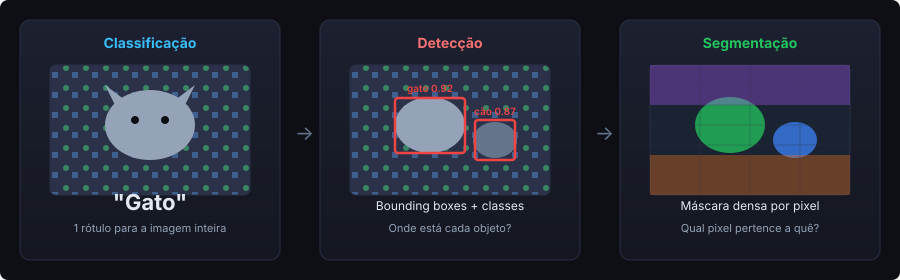
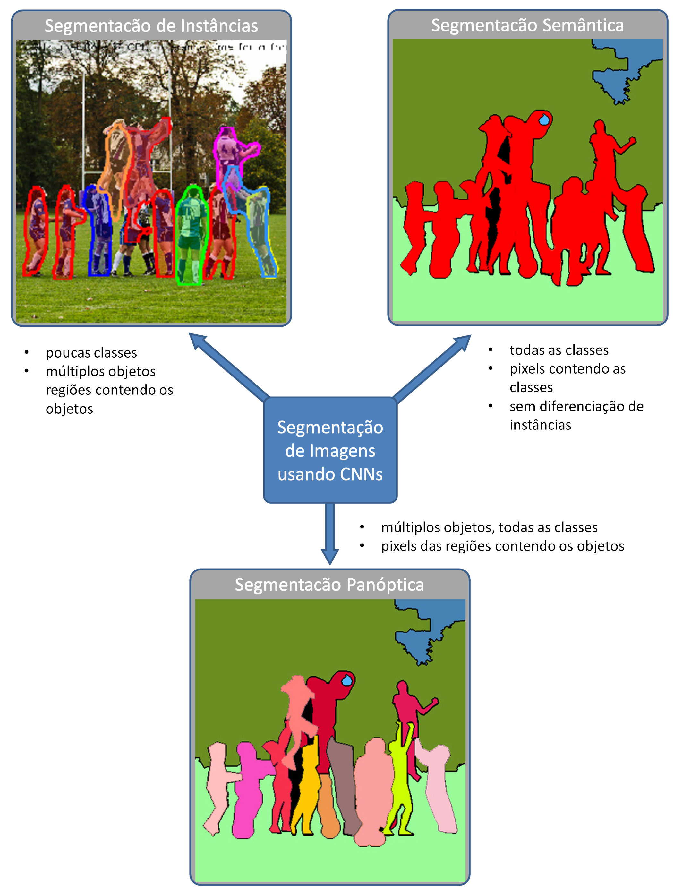
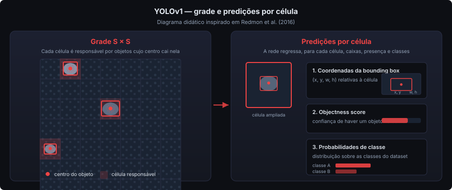
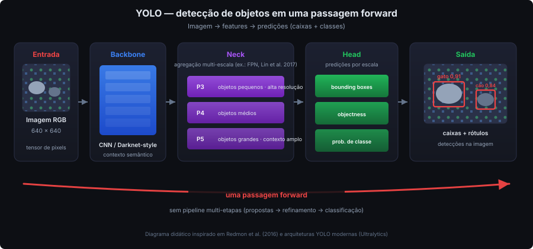
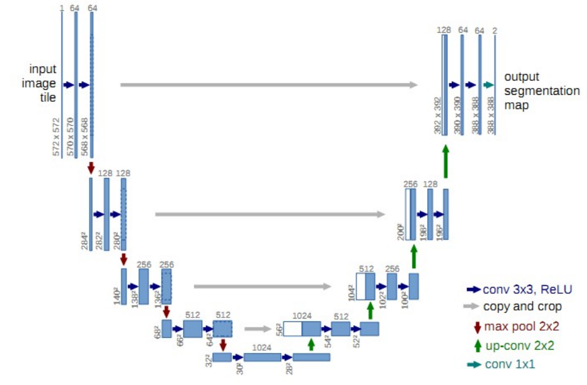
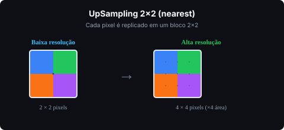

Bacharelado em Ciência da Computação
Inteligência Computacional · UTFPR-CM
Estágio em Docência
Aluno: Geazzy B M Zanoni
Prof. Diego Bertolini Gonçalves

A resposta depende da tarefa que queremos resolver.
| Tarefa | Pergunta | Saída típica |
|---|---|---|
| Classificação | O que há na imagem? | Um rótulo (ex.: "gato") |
| Localização | Onde está o objeto principal? | Bounding box + classe |
| Detecção | Quais objetos existem e onde? | Várias bounding boxes + classes |
| Segmentação | Qual pixel pertence a quê? | Máscara(s) pixel a pixel |
Goodfellow, Bengio & Courville (2016)
Detecção: caixas delimitadoras · Segmentação: máscara densa
Pixels da mesma classe recebem o mesmo rótulo — sem distinguir instâncias.
Dois carros → mesma cor de máscara.
Cada objeto recebe um identificador próprio.
Dois carros → duas máscaras separadas.
Combina semântica (classes "stuff": céu, rua) com instâncias (pessoas, veículos).
Goodfellow et al. (2016); Long, Shelhamer & Darrell (2015)

A rede produz um mapa de rótulos com a mesma resolução da imagem de entrada.
[H, W, 3]
↓ rede ↓
[H, W, K]
argmax → máscara colorida
Treinamento supervisionado exige exemplos rotulados — o modelo aprende a partir de anotações feitas por humanos (ground truth).
| Tarefa | Anotação típica |
|---|---|
| Classificação | Rótulo da imagem inteira |
| Detecção | Caixas delimitadoras |
| Segmentação | Máscaras ou polígonos pixel a pixel |
Segmentação costuma ser o gargalo — mais tempo por imagem que caixas ou rótulos.
Ferramentas que aceleram o fluxo:
Goodfellow et al. (2016); Sofiiuk & Konushin — CVAT (WACV, 2020)
Máscaras pixel a pixel exigem muito trabalho — muitos projetos partem de conjuntos já rotulados.
No exercício usamos o Oxford-IIIT Pet via torchvision — outra fonte além desses portais.
Verifique licença e formato antes de treinar.
Long, Shelhamer e Darrell (2015) demonstraram que redes totalmente convolucionais (FCN) tornaram viável produzir mapas densos a partir de CNNs de classificação.
Ronneberger et al. (2015) propuseram a U-Net: encoder-decoder com skip connections para recuperar detalhes finos — referência em segmentação biomédica.
Long et al. (CVPR, 2015) · Ronneberger et al. (MICCAI, 2015)
Métodos de detecção anteriores combinavam várias etapas — proposta de regiões + classificador — gerando latência elevada para aplicações em tempo real.
Redmon et al. (2016) reformularam detecção como um único problema de regressão: a rede olha a imagem uma vez e prediz caixas e classes diretamente.
Redmon et al. (CVPR, 2016)

Redmon et al. (2016)
Responde: onde, grosso modo
Responde: qual é a forma exata
Demonstração prática: detecção de pose em tempo real com YOLO26 (Flask + webcam)
Abrir repositório da demo ↗Redmon et al. (2016)
| Detecção | Bounding boxes + classes — caso de uso mais comum |
Segmentação de instâncias (-seg) |
Adiciona máscaras por objeto detectado (Ultralytics) |
Evolução detalhada (YOLOv1→YOLO26, NMS, benchmarks) → ver revisao-bibliografica.md
Jocher et al. — documentação Ultralytics

Redmon et al. (2016); Lin et al. (2017) — FPN; Ultralytics — diagrama didático
Ronneberger, Fischer e Brox (2015) propuseram a U-Net para segmentação de imagens médicas — contexto em que errar poucos pixels pode alterar completamente a interpretação clínica.
Ronneberger et al. (MICCAI, 2015)

Ronneberger et al. (2015) — figura original do artigo
Cada pixel em baixa resolução "enxerga" uma vizinhança grande na imagem original.
Ronneberger et al. (2015); Goodfellow et al. (2016)
Representação compacta de alto nível no ponto mais profundo da rede.
Resolução mínima · máximo de contexto semântico · mínimo de detalhe espacial
Sem recuperar resolução a partir daqui, os contornos ficariam borrados.
Sozinho, tende a produzir regiões aproximadas — sem bordas finas.

UpSampling2D — documentação Keras
Intuição: baixa resolução classifica a região; alta resolução localiza a fronteira.
Ronneberger et al. (2015)
Visualização passo a passo da arquitetura U-Net — encoder, bottleneck, decoder e skip connections.
Abrir visualização U-Net ↗Inspirada em Ronneberger et al. (2015), com simplificações didáticas
| Variação | Ideia |
|---|---|
| U-Net++ | Conexões aninhadas entre decoders (Zhou et al., 2020) |
| Attention U-Net | Atenção nas skip connections (Oktay et al., 2018) |
| Residual U-Net | Blocos residuais para redes mais profundas |
| Critério | YOLO | U-Net |
|---|---|---|
| Objetivo | Detecção (variantes -seg para instâncias) | Segmentação semântica pixel a pixel |
| Velocidade | Muito alta | Moderada |
| Saída | Bounding boxes | Máscara densa |
| Anotação | Caixas delimitadoras | Máscaras pixel a pixel |
| Aplicações | Vigilância, automotivo | Medicina, satélite, agro |
Na prática da U-Net: o limiar na Sigmoid (ex.: 0,5) define quais pixels entram na máscara binária.
Para cada caso, escolham YOLO ou U-Net e justifiquem:
Critérios: velocidade · tipo de saída · tipo de anotação disponível
segmentation_models.pytorch (encoder ResNet18 + ImageNet)Ative GPU em Ambiente de execução → Alterar tipo de ambiente. Entrega: link do Colab com todas as respostas no notebook.
Goodfellow, I.; Bengio, Y.; Courville, A. Deep Learning. MIT Press, 2016.
Redmon, J. et al. You Only Look Once. CVPR, 2016.
Ronneberger, O. et al. U-Net. MICCAI, 2015.
Long, J. et al. Fully Convolutional Networks. CVPR, 2015.
Jocher, G. et al. Ultralytics YOLO. docs.ultralytics.com
Material complementar: revisao-bibliografica.md
Perguntas?